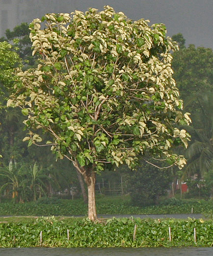

Teca
Tectona grandis
🌿 Beneficios ecológicos
El árbol de teca tiene una madera muy resistente al agua, insectos y hongos, ideal para la fabricación de muebles y construcciones duraderas. Crece rápidamente y se adapta a diferentes climas tropicales. Además, contribuye a la captura de carbono, ayudando a reducir el impacto ambiental. Sus hojas, al caer, mejoran la calidad del suelo y proporcionan buena sombra.